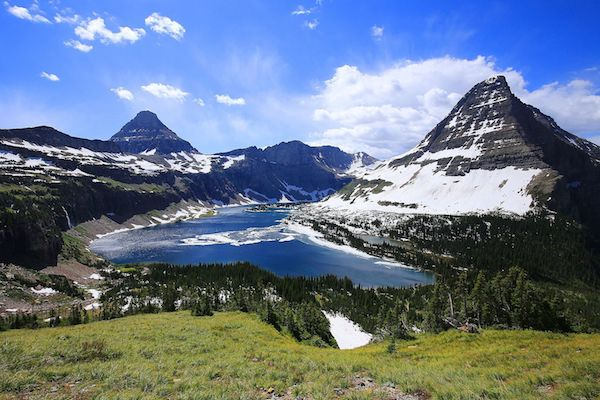

Glacier National Park
Montana

Glacier National Park is located in northern Montana and is open 365 days of the year. It is made up of more than 700 miles of trails. Visitors enjoy various activities, including hiking, camping, horseback riding, etc. It boasts beautiful lodges and campsites. This park, like most, is visited most during the summer.
Glacier National Park is an American national park located in northwestern Montana, on the Canada–United States border, adjacent to the Canadian provinces of Alberta and British Columbia. The park encompasses over 1 million acres (4,000 km2) and includes parts of two mountain ranges (sub-ranges of the Rocky Mountains), over 130 named lakes, more than 1,000 different species of plants, and hundreds of species of animals. This vast pristine ecosystem is the centerpiece of what has been referred to as the "Crown of the Continent Ecosystem," a region of protected land encompassing 16,000 square miles (41,000 km2).

A Snowy Walk
image of a person hiking in the snow covered park
Grizzlies
Young bears enjoying a grassy spot
Horseback Riding in the Park
Visitors enjoying a scenic ride
The region that became Glacier National Park was first inhabited by Native Americans. Upon the arrival of European explorers, it was dominated by the Blackfeet in the east and the Flathead in the western regions. Under pressure, the Blackfeet ceded the mountainous parts of their treaty lands in 1895 to the federal government; it later became part of the park. Soon after the establishment of the park on May 11, 1910, a number of hotels and chalets were constructed by the Great Northern Railway. These historic hotels and chalets are listed as National Historic Landmarks and a total of 350 locations are on the National Register of Historic Places. By 1932 work was completed on the Going-to-the-Sun Road, later designated a National Historic Civil Engineering Landmark, which provided greater accessibility for automobiles into the heart of the park.
The mountains of Glacier National Park began forming 170 million years ago when ancient rocks were forced eastward up and over much younger rock strata. Known as the Lewis Overthrust, these sedimentary rocks are considered to have some of the finest examples of early life fossils on Earth. The current shapes of the Lewis and Livingston mountain ranges and positioning and size of the lakes show the telltale evidence of massive glacial action, which carved U-shaped valleys and left behind moraines which impounded water, creating lakes. Of the estimated 150 glaciers which existed in the park in the mid-19th century, only 25 active glaciers remained by 2010. Scientists studying the glaciers in the park have estimated that all the active glaciers may disappear by 2030 if current climate patterns persist.
Glacier National Park has almost all its original native plant and animal species. Large mammals such as grizzly bears, moose, and mountain goats, as well as rare or endangered species like wolverines and Canadian lynxes, inhabit the park. Hundreds of species of birds, more than a dozen fish species, and a few reptile and amphibian species have been documented. The park has numerous ecosystems ranging from prairie to tundra. The easternmost forests of western red cedar and hemlock grow in the southwest portion of the park. Large forest fires are unusual in the park; however, more than 13% of the park burned in 2003.
Glacier National Park borders Waterton Lakes National Park in Canada—the two parks are known as the Waterton-Glacier International Peace Park and were designated as the world's first International Peace Park in 1932. Both parks were designated by the United Nations as Biosphere Reserves in 1976, and in 1995 as World Heritage sites. In April 2017, the joint park received a provisional Gold Tier designation as Waterton-Glacier International Dark Sky Park through the International Dark Sky Association, the first transboundary dark sky park.